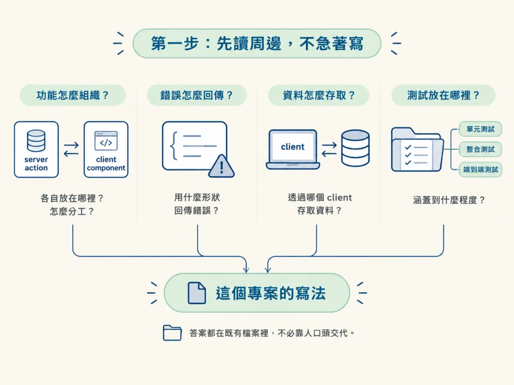
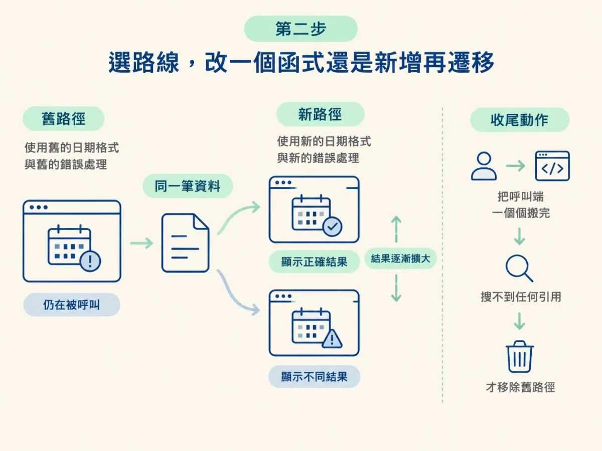
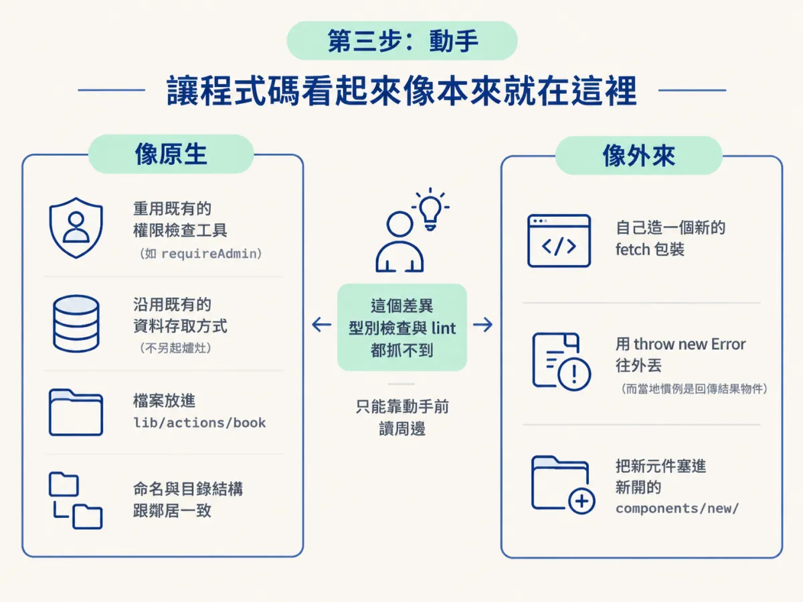
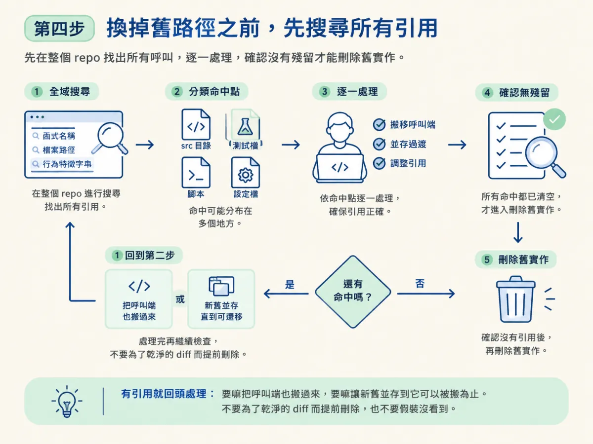
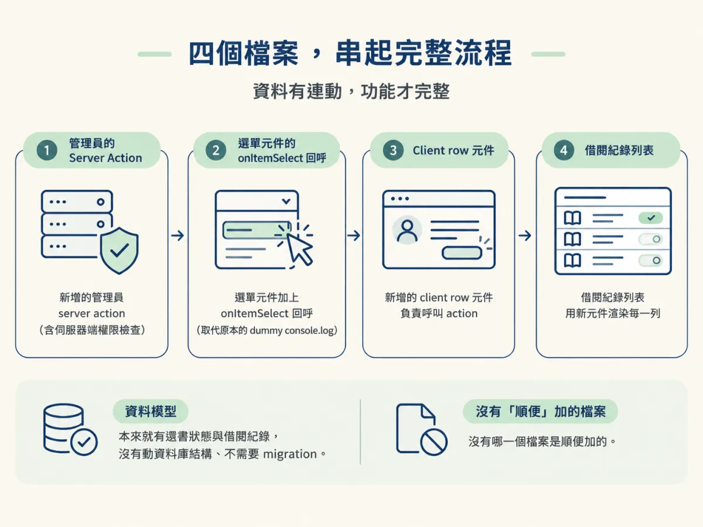

用 /develop 在舊碼庫做一個最小安全變更：沿用既有模式與工具、在「改一個函式」與「新增實作再遷移呼叫端」之間選對、換路徑前搜尋所有引用，並把改動收在 spec 邊界內。
spec 已經寫好了，範圍也定了：只有管理員能觸發還書，這次只接還書這一個狀態。聽起來很簡單，對吧？但真正的考驗在細節裡：錯誤要用什麼形狀回傳？資料要用哪個 client 存取？按鈕要放在哪個元件？命名要用 camelCase 還是 kebab-case？這些問題 spec 不會全部回答，而 agent 如果自己發明一套，程式碼一樣能跑，只是它會變成這個專案裡的異類。
舊碼庫裡的「最小變更」不是指行數最少，而是指改動落在對的位置、用對的方式、只碰該碰的東西。這一節要看 /develop 怎麼做到這件事：先讀周邊、再選路線、動手、最後確認沒有留下兩條同時在跑的路徑。
spec 接受、scope 更新之後，先 /clear，再開一個新的 session 跑 /develop。這跟上一節 clear 的理由一樣：你要讓 develop 從乾淨的上下文開始，只帶著檔案進來。這樣做的好處是它可以自己重新讀一次周邊程式碼，而不是依賴前面對話裡「某人說過」的印象。
/clear
/develop 還書（return a book）
# 或者直接指定 spec
/develop specs/0001-return-a-book如果 spec 已經很明確，第二種寫法更省事；如果只是想接著 scope 的計畫走，第一種就夠。兩者都會讓它先去找對應的 spec 與地圖。
在新專案上，develop 拿到 spec 就開始建檔案。在這裡，它會先讀這次變更周圍的檔案，並且遵循那個區域已經在用的模式。它具體看四件事：
這四項加起來，就是「這個專案的寫法」。它不需要你口頭交代，因為答案都在檔案裡。這也是為什麼前面要花力氣建地圖：地圖告訴它「去哪裡看」，實際的細節還是要它自己讀。

如果這次需要更深的掃描，它可以把掃描放進一個唯讀的 helper 裡執行。這樣主 session 只會收到有用的發現，不會被幾十個被打開的檔案塞滿。這跟 /audit 用 sub-agent 找 skills 是同一個思路：過程留在外面，結論帶進來。
讀完周邊，它會遇到一個真正的岔路。spec 說要接上還書，但既有的程式碼可能有三種狀態：已經有幾乎可用的函式、有一個只完成一半的實作、或完全沒有。路線不同，做法就不同。
| 你看到的現況 | 採用做法 | 代價與風險 |
|---|---|---|
| 既有函式只差這次要加的行為 | 直接改那個函式 | diff 最小；但要確認沒有其他地方依賴它現在的行為 |
| 新舊行為需要並存一段時間 | 在舊實作旁邊新增一份，逐步把呼叫端移過去，最後才刪舊的 | 安全、可回滾；但期間要有紀律，不能讓兩條路都有人維護 |
| 既有邏輯看不懂，但程式在跑 | 不動它，新增路徑繞過或包裝 | 技術債留著；但比拆掉一個正在保護某個契約的條件安全 |
判斷的問句很簡單：這次要改的行為，是既有函式本來就該負責的嗎？如果是，改它；如果這次是新增一種與舊行為並存的需求，就新增再遷移。示範裡的還書屬於前者：資料模型裡已經有還書狀態，後台也已經有借閱紀錄，缺的是把管理員的操作接上去，所以它直接往既有的 server action 裡加。
反過來說，什麼時候該走「新增再遷移」？當你無法一次把所有呼叫端改完，或新舊行為必須同時存在一段時間的時候，例如同一個通知流程要從舊的排程器換到新的佇列。這時候新的實作先上，呼叫端一個一個搬，等到搜尋不到任何引用，才移除舊路徑。
這裡有一個很容易被忽略的細節：兩條路徑同時存在時，它們會慢慢產生不同的結果。舊路徑可能還在用舊的日期格式、舊的錯誤處理，於是同一筆資料在兩個畫面看起來不一樣。這不是理論上的風險，而是這種遷移最常見的結局。所以「最後才移除舊路徑」不是拖延，是必須有一個明確的收尾動作。

示範裡它很快確認：spec 要求的還書 server action 已經有既定的位置，就在 lib/actions/book，於是它把實作補進那個檔案，接著去接後台的下拉選單元件。下面是形狀示意，不是原始碼。重點是看它沿用了什麼：
// lib/actions/book.ts（示意：在既有檔案新增一個 action）
"use server";
export async function returnBook(borrowRecordId: string) {
await requireAdmin(); // 沿用專案既有的權限檢查
// 更新借閱紀錄狀態、寫入還書時間
// 重新驗證受影響的路徑
}// 後台選單（示意：把原本的 dummy 行為換成真的呼叫）
onItemSelect={async (record) => {
await returnBook(record.id);
}}兩個示意都刻意留白，因為真正的內容取決於專案。你要看的不是語法，而是三個判斷：它有沒有重用既有的權限檢查，而不是自己再寫一套？它有沒有沿用既有的資料存取方式，而不是直接開一個新的連線？它有沒有把檔案放在該放的位置，而不是為了方便新開一個資料夾？
課程對這個結果的描述是：實作看起來就屬於這個專案。具體表現在三件事上：重複使用既有工具而不是造一個新的、遵循當地的命名與檔案結構、把改動留在 spec 定義的邊界內。

這是本節最重要的一個動作。當既有程式碼真的要被取代時，/develop 會在移除之前搜尋每一個引用。理由不難懂：如果只改了它知道的那一個呼叫端，其他地方還在呼叫舊函式，舊路徑就沒有真的消失。兩條路徑同時活著，就會慢慢產生不同的結果。
實作上的做法很樸素：用函式名稱、檔案路徑、或那個行為的特徵字串去搜整個 repo，確認每一個命中都處理過。不是只搜 src，也要看測試、腳本、設定檔。搜完之後，才能把舊的實作刪掉。
# 移除舊路徑前，先確認沒有殘留引用（依實際名稱替換）
rg "舊函式名稱|舊檔案路徑" .
# 確認測試與腳本裡也沒有
rg "舊函式名稱" --glob "*.{test,spec}.{ts,tsx,js,jsx}" .如果搜到還有引用，就回到第二步：要嘛把那個呼叫端也搬過來，要嘛讓新舊並存到它可以被搬為止。不要為了一個乾淨的 diff 而提前刪除，也不要假裝沒看到。

讀舊程式碼的時候，你一定會看到一堆想順手改的東西：命名不一致、重複的 utility、一段沒人用的程式。develop 會把這些留在這次變更之外。理由不是懶，而是 review 的成本：當 diff 裡只有這個增強功能真正需要的檔案與行為時，審查的人可以逐行確認；一旦混進三個不相關的重構，真正的風險就被藏在噪音裡。
這也回到前面 architect 的原則：不要因為「這樣比較乾淨」就重寫。乾淨是好事，但它應該是另一個有意識的決定，而不是一個功能變更的副作用。
寫完之後，它會先檢查型別。示範裡型別全部過關。接著跑 lint，發現了一些問題，但那些是原本就存在的，不是這次改動造成的。它沒有因此停手，還是把它們修掉了；同時確認自己新寫的程式碼是 lint clean 的。
這一段有兩個可以帶走的習慣。第一，分清楚「我弄壞的」和「本來就壞的」：前者一定要修，後者可以修，但要讓 reviewer 知道它不是這次功能的一部分。第二，型別與 lint 是最便宜的驗證，先跑完再談更重的檢查；如果型別都不過，後面的功能驗證沒有意義。
npm run typecheck
npm run lint最後它更新了 spec 與 scope，把實際做了什麼、哪些地方跟原本的計畫不同記錄下來。這個動作很重要：下一個 session 或下一個接手的人，讀到的是更新後的版本，而不是一份跟程式碼已經脫節的計畫。
示範的結果是一個可用的還書功能：管理員可以從後台把書標記為歸還，狀態立刻更新。它沒有動資料庫結構，所以不需要 migration；總共只碰了四個檔案：
onItemSelect 回呼，取代原本只印出 dummy 資料的 console.log。注意這四個改動之間的關係：它們是一條線，不是四散的功能。action 提供行為、回呼接上行為、元件負責觸發、列表負責渲染。沒有任何一個是「順便」加的。這就是最小安全變更的具體長相。

你可以用幾個條件確認自己做完了：功能在畫面上真的能用；diff 裡只有這次需要的檔案；舊路徑（如果被取代）已經搜過所有引用並移除；型別與 lint 沒有新增問題；spec 與 scope 已同步。
最常見的失敗不是功能壞掉，而是功能會動、卻讓下一個工程師皺眉。三種典型長相：自己造一個新的 fetch 包裝，而專案裡已經有一個；把錯誤用 throw new Error 往外丟，而這個區域的慣例是回傳結果物件；把新元件放在一個新開的 components/new/ 資料夾，而附近所有元件都在 components/admin/。
這三種都不會被型別檢查抓到，也不會被 lint 抓到，因為它們語法正確。抓到它們的方法只有一個：動手前真的讀過周邊。這也是為什麼第一步不能省。
/develop 在舊碼庫裡先讀變更周邊的檔案，看類似功能怎麼組織、錯誤怎麼回、資料怎麼存取、測試怎麼寫，再決定要改既有函式還是新增實作再遷移。動手時沿用既有工具、命名與檔案結構，把改動收在 spec 邊界內；換掉舊路徑前搜尋所有引用；把無關的整理留在外面。完成後跑型別與 lint，並更新 spec 與 scope。示範的結果是四個檔案、不需要 migration 的還書功能。
功能做出來了，但「能跑」還不等於「可以交」。最後一節要處理收尾：什麼時候用 check verify、什麼時候再補一個 check review、什麼時候該 clear，以及哪種小修正可以跳過 /scope。